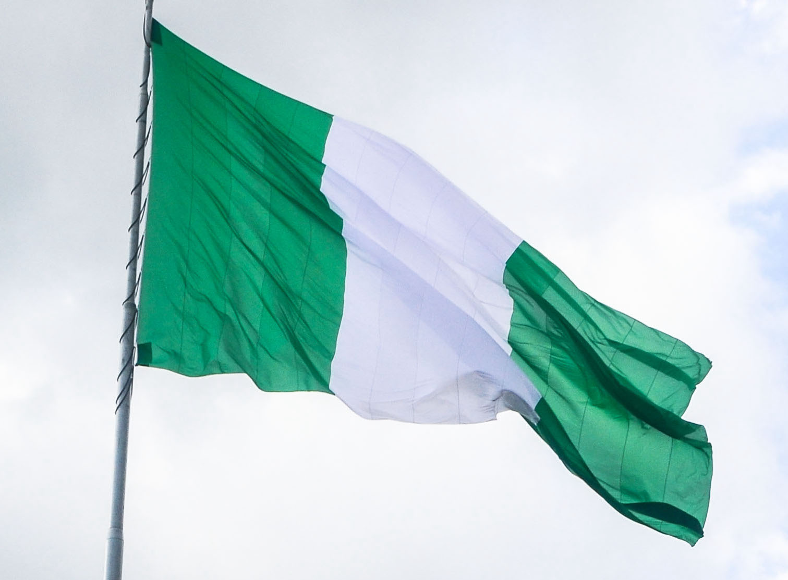

About Me Profile
By the end of this page I aim to give a keyword summary about Myself, firstly my name is Ayobami Akinbiyi. what I love to engage with best is computer programming which I am currently taking my degree cousre WDD 131 Dynamic Web Fundamentals at byu-idaho, I am passionate about web development and excited to learn new technologies. Additionally I am a member of The Church Of Jesus Christ Of Latter Day saint, Also I have served and retunred sucessfully from my mission. I love Football for Sport and food. Thank You for your time see you again!!
Nigeria, Lagos state
Lagos State, located in the southwestern part of Nigeria, is a vibrant and bustling metropolis that serves as the nation's economic and commercial hub. Renowned for its dynamic energy and cultural diversity, Lagos embodies the pulsating heartbeat of Nigeria.The city of Lagos, with its sprawling coastline along the Gulf of Guinea, boasts a rich history, evident in sites like the Freedom Park and the National Museum. The state is not only an economic powerhouse, with its thriving industries and financial district, but also a cultural melting pot, where tradition and innovation coexist in harmony. From the vibrant street life to the bustling markets and the iconic Lekki-Ikoyi Link Bridge, Lagos State encapsulates the essence of a dynamic and evolving urban landscape..